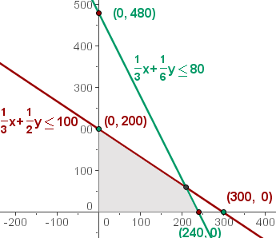
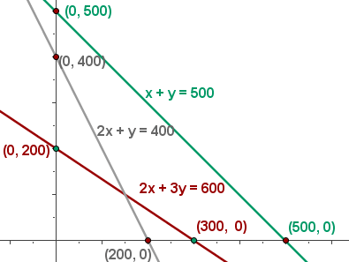
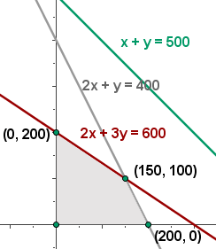
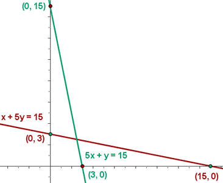
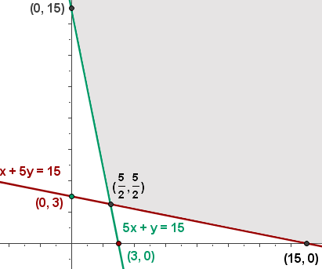
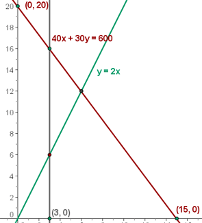
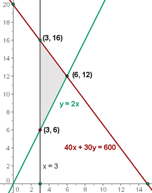
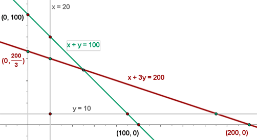
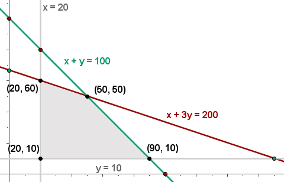

Ejercicios y problemas resueltos de programación lineal
1Una compañía fabrica y venden dos modelos de lámpara L1 y L2. Para su fabricación se necesita un trabajo manual de 20 minutos para el modelo L1 y de 30 minutos para el L2; y un trabajo de máquina para L1 y de 10 minutos para L2. Se dispone para el trabajo manual de 100 horas al mes y para la máquina 80 horas al mes. Sabiendo que el beneficio por unidad es de 15 y 10 euros para L1 y L2, respectivamente, planificar la producción para obtener el máximo beneficio.
2Con el comienzo del curso se va a lanzar unas ofertas de material escolar. Unos almacenes quieren ofrecer 600 cuadernos, 500 carpetas y 400 bolígrafos para la oferta, empaquetándolo de dos formas distintas; en el primer bloque pondrá 2 cuadernos, 1 carpeta y 2 bolígrafos; en el segundo, pondrán 3 cuadernos, 1 carpeta y 1 bolígrafo. Los precios de cada paquete serán 6.5 y 7 €, respectivamente. ¿Cuántos paquetes le conviene poner de cada tipo para obtener el máximo beneficio?
3En una granja de pollos se da una dieta, para engordar, con una composición mínima de 15 unidades de una sustancia A y otras 15 de una sustancia B. En el mercado sólo se encuentra dos clases de compuestos: el tipo X con una composición de una unidad de A y 5 de B, y el otro tipo, Y, con una composición de cinco unidades de A y una de B. El precio del tipo X es de 10 euros y del tipo Y es de 30 €. ¿Qué cantidades se han de comprar de cada tipo para cubrir las necesidades con un coste mínimo?
4Se dispone de 600 g de un determinado fármaco para elaborar pastillas grandes y pequeñas. Las grandes pesan 40 g y las pequeñas 30 g. Se necesitan al menos tres pastillas grandes, y al menos el doble de pequeñas que de las grandes. Cada pastilla grande proporciona un beneficio de 2 € y la pequeña de 1 €. ¿Cuántas pastillas se han de elaborar de cada clase para que el beneficio sea máximo?
5Unos grandes almacenes desean liquidar 200 camisas y 100 pantalones de la temporada anterior. Para ello lanzan, dos ofertas, A y B. La oferta A consiste en un lote de una camisa y un pantalón, que se venden a 30 €; la oferta B consiste en un lote de tres camisas y un pantalón, que se vende a 50 €. No se desea ofrecer menos de 20 lotes de la oferta A ni menos de 10 de la B. ¿Cuántos lotes ha de vender de cada tipo para maximizar la ganancia?
- 1
- 2
- 3
- 4
- 5
Ejercicio 1 resuelto
Una compañía fabrica y venden dos modelos de lámpara L1 y L2. Para su fabricación se necesita un trabajo manual de 20 minutos para el modelo L1 y de 30 minutos para el L2; y un trabajo de máquina para L1 y de 10 minutos para L2. Se dispone para el trabajo manual de 100 horas al mes y para la máquina 80 horas al mes. Sabiendo que el beneficio por unidad es de 15 y 10 euros para L1 y L2, respectivamente, planificar la producción para obtener el máximo beneficio.
1 Elección de las incógnitas.
x = nº de lámparas L1
y = nº de lámparas L2
2 Función objetivo
f(x, y) = 15x + 10y
3 Restricciones
Pasamos los tiempos a horas
20 min = 1/3 h
30 min = 1/2 h
10 min = 1/6 h
Para escribir las restricciones vamos a ayudarnos de una tabla:
| L1 | L2 | Tiempo | |
|---|---|---|---|
| Manual | 1/3 | 1/2 | 100 |
| Máquina | 1/3 | 1/6 | 80 |
1/3x + 1/2y ≤ 100
1/3x + 1/6y ≤ 80
Como el número de lámparas son números naturales, tendremos dos restricciones más:
x ≥ 0
y ≥ 0
4 Hallar el conjunto de soluciones factibles
Tenemos que representar gráficamente las restricciones.
Al ser x ≥ 0 e y ≥ 0, trabajaremos en el primer cuadrante.
Representamos las rectas, a partir de sus puntos de corte con los ejes.
Resolvemos gráficamente la inecuación: 1/3 x + 1/2 y ≤ 100; para ello tomamos un punto del plano, por ejemplo el (0,0).
1/3·0 + 1/2·0 ≤ 100
1/3·0 + 1/6·0 ≤ 80
La zona de intersección de las soluciones de las inecuaciones sería la solución al sistema de inecuaciones, que constituye el conjunto de las soluciones factibles.

5 Calcular las coordenadas de los vértices del recinto de las soluciones factibles.
La solución óptima si es única se encuentra en un vértice del recinto. estos son las soluciones a los sistemas:
1/3x + 1/2y = 100; x = 0 (0, 200)
1/3x + 1/6y = 80; y = 0(240, 0)
1/3x + 1/2y = 100; 1/3x + 1/6y = 80(210, 60)

6 Calcular el valor de la función objetivo
En la función objetivo sustituimos cada uno de los vértices.
f(x, y) = 15x + 10y
f(0, 200) = 15·0 + 10·200 = 2 000 €
f(240, 0 ) = 15·240 + 10·0 = 3 600 €
f(210, 60) = 15·210 + 10·60 = 3 750 € Máximo
La solución óptima es fabricar 210 del modelo L1 y 60 del modelo L1 para obtener un beneficio de 3 750 € .
Ejercicio 2 resuelto
Con el comienzo del curso se va a lanzar unas ofertas de material escolar. Unos almacenes quieren ofrecer 600 cuadernos, 500 carpetas y 400 bolígrafos para la oferta, empaquetándolo de dos formas distintas; en el primer bloque pondrá 2 cuadernos, 1 carpeta y 2 bolígrafos; en el segundo, pondrán 3 cuadernos, 1 carpeta y 1 bolígrafo. Los precios de cada paquete serán 6.5 y 7 €, respectivamente. ¿Cuántos paquetes le conviene poner de cada tipo para obtener el máximo beneficio?
1 Elección de las incógnitas.
x = P1
y = P2
2 Función objetivo
f(x, y) = 6.5x + 7y
3 Restricciones
| P1 | P2 | Disponibles | |
|---|---|---|---|
| Cuadernos | 2 | 3 | 600 |
| Carpetas | 1 | 1 | 500 |
| Bolígrafos | 2 | 1 | 400 |
2x + 3y ≤ 600
x + y ≤ 500
2x + y ≤ 400
x ≥ 0
y ≥ 0
4 Hallar el conjunto de soluciones factibles

5 Calcular las coordenadas de los vértices del recinto de las soluciones factibles.

6 Calcular el valor de la función objetivo
f(x,y) = 6.5 · 200 + 7 · 0 = 1300 €
f(x,y)= 6.5 · 0 + 7 · 200 = 1 400 €
f(x,y)= 6.5 · 150 + 7 · 100 = 1 675 € Máximo
La solución óptima son 150 P1 y 100 P2 con la que se obtienen 1 675 €
Ejercicio 3 resuelto
En una granja de pollos se da una dieta, para engordar, con una composición mínima de 15 unidades de una sustancia A y otras 15 de una sustancia B. En el mercado sólo se encuentra dos clases de compuestos: el tipo X con una composición de una unidad de A y 5 de B, y el otro tipo, Y, con una composición de cinco unidades de A y una de B. El precio del tipo X es de 10 euros y del tipo Y es de 30 €. ¿Qué cantidades se han de comprar de cada tipo para cubrir las necesidades con un coste mínimo?
1 Elección de las incógnitas.
x = X
y = Y
2 Función objetivo
f(x,y) = 10x + 30y
3 Restricciones
| X | Y | Mínimo | |
|---|---|---|---|
| A | 1 | 5 | 15 |
| B | 5 | 1 | 15 |
x + 5y ≥ 15
5x + y ≥ 15
x ≥ 0
y ≥ 0
4 Hallar el conjunto de soluciones factibles

5 Calcular las coordenadas de los vértices del recinto de las soluciones factibles.

6 Calcular el valor de la función objetivo
f(0, 15) = 10 · 0 + 30 · 15 = 450
f(15, 0) = 10 · 15 + 30 · 0 = 150
f(5/2, 5/2) = 10 · 5/2 + 30 · 5/2 = 100 Mínimo
El coste mínimo son 100 € para X = 5/2 e Y = 5/2.
Ejercicio 4 resuelto
Se dispone de 600 g de un determinado fármaco para elaborar pastillas grandes y pequeñas. Las grandes pesan 40 g y las pequeñas 30 g. Se necesitan al menos tres pastillas grandes, y al menos el doble de pequeñas que de las grandes. Cada pastilla grande proporciona un beneficio de 2 € y la pequeña de 1 €. ¿Cuántas pastillas se han de elaborar de cada clase para que el beneficio sea máximo?
1 Elección de las incógnitas.
x = Pastillas grandes
y = Pastillas pequeñas
2 Función objetivo
f(x, y) = 2x + y
3 Restricciones
40x + 30y ≤ 600
x ≥ 3
y ≥ 2x
x ≥ 0
y ≥ 0
4 Hallar el conjunto de soluciones factibles

5 Calcular las coordenadas de los vértices del recinto de las soluciones factibles.

6 Calcular el valor de la función objetivo
f(x, y) = 2 · 3 + 16 = 22 €
f(x, y) = 2 · 3 + 6 = 12 €
f(x, y) = 2 · 6 + 12 = 24 € Máximo
El máximo beneficio es de 24 €, y se obtiene fabricando 6 pastillas grandes y 12 pequeñas.
Ejercicio 5 resuelto
Unos grandes almacenes desean liquidar 200 camisas y 100 pantalones de la temporada anterior. Para ello lanzan, dos ofertas, A y B. La oferta A consiste en un lote de una camisa y un pantalón, que se venden a 30 €; la oferta B consiste en un lote de tres camisas y un pantalón, que se vende a 50 €. No se desea ofrecer menos de 20 lotes de la oferta A ni menos de 10 de la B. ¿Cuántos lotes ha de vender de cada tipo para maximizar la ganancia?
1 Elección de las incógnitas.
x = nº de lotes de A
y = nº de lotes de B
2 Función objetivo
f(x, y) = 30x + 50y
3 Restricciones
| A | B | Mínimo | |
|---|---|---|---|
| Camisas | 1 | 3 | 200 |
| Pantalones | 1 | 1 | 100 |
x + 3y ≤ 200
x + y ≤ 100
x ≥ 20
y ≥ 10
4 Hallar el conjunto de soluciones factibles

5 Calcular las coordenadas de los vértices del recinto de las soluciones factibles.

6 Calcular el valor de la función objetivo
f(x, y) = 30 · 20 + 50 · 10 = 1100 €
f(x, y) = 30 · 90 + 50 · 10 = 3200 €
f(x, y) = 30 · 20 + 50 · 60 = 3600 €
f(x, y) = 30 · 50 + 50 · 50 = 4000 € Máximo
Con 50 lotes de cada tipo se obtiene una ganancia máxima de 4000 €.
 Ejercicios
Ejercicios